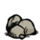
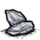
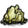

This is a guide for estimating the equivalent excrement extracted from a Snurtle or Slurtle when one of these natural mobile slime production facilities is fed a food type of "elemental" (i.e. a rock, gem or similar).
This can be useful, since slurtle slime has two uses: an explosive (albeit weaker than Gunpowder); and fuel for the Lantern. So farming slurtle slime is a cheap and effective way to keep your lanterns fueled and some explosive substance ready (which may in turn be used to either kill things, or create earthquakes underground).
Snurtles and Slurtles both have the same stomach mechanic for determining when Slurtle Slime is produced.
Basically, whenever their "stomach" contains a value greater than 5 from eating one or more elements from the table in this section, one unit of Slurtle Slime is produced. If it contains a value greater than n*5 (e.g. if the creature eats a lot of items quickly), then n units of Slurtle Slime are produced (in one stack). Due to the incredibly slow speed of these creatures, it is unlikely that more than 2 units of Slurtle slime will ever be excreted in one stack, although it is in theory possible.
Note that although their stomachs operate the same, the two creatures have different behaviors. Notably, the Slurtle is aggressive towards the player, and will attempt to steal elemental items unprovoked. On the other hand, the Snurtle is much more passive and will not engage the player even when attacked, instead choosing to retreat into its shell. For this reason, it is recommended to primarily use Snurtles for slime production rather than Slurtles if possible.
Each "elemental" food type has a value associated with it, which is added to the Snurtle/Slurtle stomach when ingested, resulting in the slime production described in the section above.
Note that values are also used when feeding these objects to a Rock Lobster, although in this case they are used for calculating loyalty (since Rock Lobsters do not excrete slime, or anything else for that matter).
| Object | Element Value |
|---|---|
| Rock  | 1 |
| Flint  | 1 |
| Gold Nugget | 2 |
| Nitre  | 2 |
| Thulecite | 3 |
| Blue Gem | 5 |
| Red Gem | 5 |
| Orange Gem | 5 |
| Yellow Gem | 5 |
| Green Gem | 5 |
| Purple Gem | 5 |
Note that Thulecite, Orange Gems, Yellow Gems and Green Gems are not renewable resources. Since these items are also required for crafting, it may be more desirable to feed the other, more common (and renewable) items to Slurtles/Snurtles for the purposes of slime production.
| Game Guides | |
| Basic | Getting Started • All About Night |
| Camping | Base Camp • Frog Pond Camp • Self-sustaining Settlement • Marsh Camp • Camping Underground |
| Farming | Gold Nugget Farm • Renewable Farming • Woodie's Curse • Farming • Nightmare Fuel Farming |
| Survival | Adventure Mode • Mob Killing • How To not starve • How to survive • Hound Wave Survival • Mushroom Guide • Spelunking Guide • Winter Guide • Crock Pot Dishes • Teleportato Rush Guide • Panic Room Guide • Just Spawned • Advanced World • World vs Caves |
| Technical | Excrement Extraction Guide • Physical Damage Absorbtion • Console Commands |
| Characters | Wendy • Wolfgang • Wickerbottom's Books |
{kind=link}
{kind=link}
{kind=link}
{kind=link}
{kind=link}